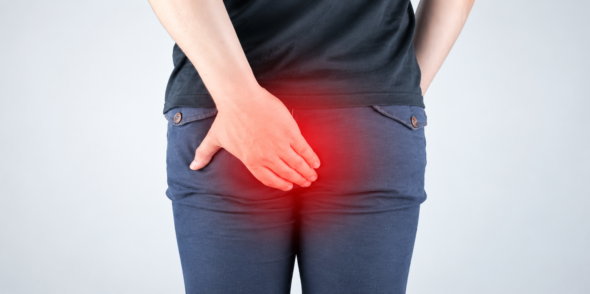

Itching around the anus is common, and it can be hard to live with, especially at night. It often has a cause that can be found and treated, and scratching usually makes it worse.
Dr. Pradipkumar Tupere, a proctologist and general surgeon at Navoday Clinic in Kharadi, Pune, examines you and looks for the cause, such as piles, a fissure, a fistula or irritated skin. He explains your options before any treatment is advised, and refers you when the cause is a skin disease.
At a glance
| Topic | In brief |
|---|---|
| What it is | An itch in or around the anus, which doctors call pruritus ani. |
| Common causes | Moisture or leakage from piles or a fistula, a fissure, irritated skin, an infection, threadworms and some foods and drinks. In some people no cause is found. |
| What helps while you wait | Gentle washing with plain water, patting the area dry, wearing cotton underwear and not scratching. |
| See a doctor if | The itch lasts more than two weeks, keeps coming back, or comes with blood, a lump, discharge, pain or broken skin. |
| Who treats it | A proctologist or general surgeon when the cause is in the anus, and a dermatologist for skin disease. |
| Where | Navoday Clinic, Kharadi, Pune. |
Signs that come with anal itching
The itch can be mild or severe, constant or worse at night. It often comes with:
- A burning or raw feeling around the anus.
- Redness, a rash, or skin that looks white, thickened or cracked.
- Wetness, mucus or stool that leaks and stains underwear.
- A lump or swelling near the anus.
- Pain when passing stool, or blood on the paper.
- Tiny thread-like worms seen near the anus, mostly in children.
See a doctor soon if
- The itch lasts more than two weeks or keeps coming back.
- The skin is broken, weeping, bleeding or scabbed.
- You see blood on the paper or in the stool.
- You feel a lump or notice discharge.
- Your sleep is disturbed by the itch.
- Home care has not helped.
Get urgent care today if
The skin around the anus becomes very red, hot, swollen and painful, or you have fever, because these can signal an infection.
Why the anus itches
Anal itching has many causes, and more than one can be present at the same time. They fall into three groups:
| Group | Examples | Related pages |
|---|---|---|
| Problems of the anus and rectum | Piles that leak mucus or sit outside the anus, a fissure, a fistula that drains, skin tags and a rectal prolapse. Each can leave the skin damp and irritated. | Piles, Anal Fissure, Anal Fistula |
| Skin and cleaning habits | Too much washing or too little, scented soaps and wipes, sweat and tight clothing, a fungal infection, eczema and allergy to a cream. | Skin examination |
| Other causes | Threadworms, loose stools, diabetes, a recent course of antibiotics, and foods and drinks such as coffee, tea, cola, spicy food, citrus fruit and tomato in some people. | Medical assessment |
In some people no cause is found. Rarely, a skin disease or a growth near the anus causes an itch that does not settle, which is why an itch that lasts, with a sore, a patch or bleeding, should be examined.
The itch and scratch cycle
Scratching damages the skin, and damaged skin itches more. This is why the itch can last long after the first cause has gone, and why treating the cause and protecting the skin go together.
Things that raise the risk
- Loose or frequent stools.
- Piles, a fissure or a fistula.
- Sweating, tight clothing and long hours of sitting.
- Cleaning too hard or using scented products.
- Diabetes.
Because the causes are so varied, Dr. Tupere asks about your cleaning habits, products, diet, medicines and bowel habit as well as examining you.
How the cause of the itch is found
Dr. Tupere starts with questions and an examination, and moves to tests only when they are needed.
01
Your history
He asks when the itch started, whether it is worse at night or after a bowel movement, which soaps, wipes, creams and medicines you use, what you eat and drink, how you pass stool, whether anyone at home has similar symptoms, and any earlier anal problem or diabetes.
02
Examination
He looks at the skin around the anus and gently examines the anal canal for piles, a fissure, a fistula, skin tags or a prolapse.
03
Tests when needed
A swab or skin scraping can look for a fungal or other infection, a tape test can look for threadworms, and a blood sugar test can check for diabetes. A colonoscopy may be advised when there are warning signs such as bleeding or a change in bowel habit, and a dermatologist may take a skin sample.
Treatment, matched to the cause
Anal itching settles when the cause is treated and the skin has time to heal. Dr. Tupere advises the plan after examining you.
Simple care that helps most people
| Step | What it involves |
|---|---|
| Keep the area clean and dry | Wash gently with plain warm water after a bowel movement, then pat dry with a soft cloth or tissue and do not rub. |
| Avoid irritants | Skip scented soaps, wipes and talc, and do not put oils, spices or home remedies on the skin unless your doctor advises. |
| Do not scratch | Keep nails short, wear loose cotton underwear and change it daily. |
| Watch your triggers | Cut down on coffee, tea, cola or spicy food if the itch seems to follow them. |
| Keep stools formed | Fibre and enough water help the stool stay soft and easy to clean up after. |
| Medicines | Creams, antifungal treatment or worm treatment only as prescribed. Do not use a strong cream for weeks without advice, because some creams thin the skin. |
Treatment by cause
| Cause | Usual approach |
|---|---|
| Piles, fissure or fistula | The anal problem is treated as described on its page, and the itch may settle as the leakage and irritation stop. See the Piles, Anal Fissure and Anal Fistula pages. |
| Skin irritation | The irritant is stopped and the skin is protected while it heals. |
| Fungal infection | Antifungal treatment as prescribed. |
| Threadworms | Worm treatment, usually for the whole household, as advised. |
| Skin disease | A referral to a dermatologist. |
| No clear cause | Skin care, changes to triggers and a review visit. |
When a referral helps
Some itching belongs to another specialist: a dermatologist for skin disease, a physician for diabetes, and a paediatrician for worms in a child. Dr. Tupere refers you when that is the better route.
Consult Dr. Pradipkumar Tupere about anal itching
Dr. Pradipkumar Tupere is a proctologist and general surgeon with an MBBS and an MS in General Surgery. He treats the anal conditions behind much anal itching, including piles, fissures and fistulas, and he has trained in laser and stapler techniques for piles and in laser and video-assisted techniques for fistula. When the cause is a skin disease, he explains this and advises referral to the appropriate specialist.
What to expect at your visit
- Book: Call, message on WhatsApp or use the form. We confirm your appointment slot.
- Bring: Any earlier reports, the names of the soaps, wipes, creams and medicines you have used, and a short note of when the itch is worst and what seems to set it off.
- Consultation and examination: Dr. Tupere listens to your symptoms and examines you. He explains each step and pauses if you are uncomfortable.
- Your plan: He explains what he found and what to do next. Many patients start with skin care and treatment of the cause, and not every visit leads to tests or a procedure.
If a test or a procedure is advised: You are guided through preparation and recovery.
Itching in the anus: frequently asked questions
Common causes are piles, a fissure or a fistula that leaves the skin damp, irritated skin from soaps, wipes or over-cleaning, a fungal infection, threadworms and some foods and drinks. In some people no cause is found. An examination shows which cause applies.
It can be. Piles that leak mucus or sit outside the anus can keep the skin damp and itchy, but many other things cause the same itch.
Warmth in bed, fewer distractions and tired skin make an itch feel stronger at night. Threadworms also come out at night, so a night-time itch, especially in a child, is worth checking for them.
In some people, coffee, tea, cola, spicy food, citrus fruit and tomato seem to set it off. If you notice a link, cut down on that item for a few weeks and see whether the itch eases.
Wash gently with plain warm water, pat the area dry, wear loose cotton underwear, keep your nails short and avoid scratching and scented products. Use a cream only if a doctor prescribes it. If the itch does not settle in two weeks, see a doctor.
A cream picked for the wrong cause can make the itch worse, and some creams thin the skin when used for weeks. Ask a doctor which one suits your cause before you use it regularly.
Threadworms are a common cause in children and can spread through a household. They cause a strong itch near the anus, mostly at night. Treatment is usually given to the whole household, as a doctor advises.
It is usually not serious, but it can last for months if the cause is not treated. See a doctor if it lasts more than two weeks, keeps returning, or comes with blood, a lump, discharge, pain or broken skin.
A family physician or a dermatologist can help when the cause is in the skin. A proctologist or general surgeon is the right doctor when the cause may be in the anus, for example with piles, a fissure, a lump or discharge. Dr. Pradipkumar Tupere is a proctologist and general surgeon who consults at Navoday Clinic in Kharadi, Pune.